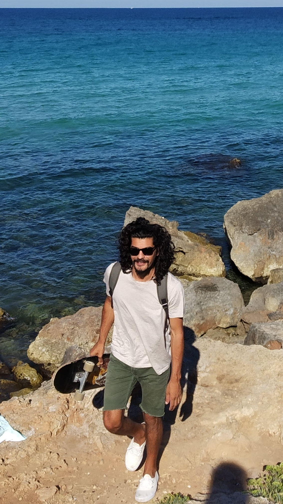

<!-- i18n="@@aboutUs" -->
<div class="background-container background-text">
  <div class="text-container">
    <span class="subtitle">Hi guys!! Thanks for joining us.</span>
    <p>
      <br />We are <b> Nomads - Acroyoga</b>: a fusion of acrobatics, yoga and
      nomadic life.
    </p>

    <p class="about-us">
      <b><i>ACROBATICS</i></b> in acroyoga is considered as a solar practice,
      this helps us develop self-confidence, together with the strength and fun
      of acrobatics.
    </p>

    <p class="about-us">
      <b><i>YOGA</i></b
      >, the lunar part, helps us cultivate awareness in breathing, balance and
      connection.
    </p>
    <p class="about-us">
      <b><i>NOMADIC LIFE</i></b> makes us discover new places and develop
      curiosity, adaptation, mental and emotional flexibility.
    </p>
    <div class="video-container">
      <!-- Take a look at our launch video. -->
      <iframe
        class="polaroid"
        width="92%"
        [src]="videoUrl"
        [height]="getVideoHeight()"
        frameborder="0"
        allow="accelerometer; autoplay; clipboard-write; encrypted-media;
      gyroscope; picture-in-picture"
        allowfullscreen
      ></iframe>
    </div>

    <p class="about-us">
      Acroyoga is a large <b>global community</b>. Regardless of your location,
      skill-level, or income, we will provide a safe, fun and empowering
      practice for you and your partners. AcroYoga supports physical health,
      clear and kind communication, creative potential, and human connection.
    </p>
    <p class="about-us">
      We talk about <b>community</b> because we practice it with other people.
      Being connected with other bodies promotes concentration, balance and
      confidence in others.
    </p>
    <p class="about-us">
      NO WORRIES!!! You do not need to be an expert in yoga or acrobatics to
      practice this discipline as there are postures that any beginner can
      perform.
    </p>
    <p class="about-us">
      To achieve success in this discipline,
      <b
        >mutual help is needed that forces people to let go of control, fear,
        anxiety and free themselves from useless burdens.</b
      >
    </p>
    <p>
      Doing a balanced posture requires utmost concentration and attention. This
      state of focus improves a
      <b
        >greater awareness in the present, leaving distractions and anxiety
        aside.</b
      >
    </p>
    <p>
      WHAT WE LOVE about Yoga, acrobatics and travel is that they have a common
      ground: <b> living in the present in balance with others.</b>
      <br />
      <br />
      <br />
    </p>

    <span class="subtitle">Acroyoga as a couple's therapy </span>
    <hr />

    <!-- <div class="image-description"> -->
    <div fxLayout="row wrap" fxLayoutGap="1%">
      <div
        class="polaroid"
        fxFlex="29%"
        fxFlex.lg="29%"
        fxFlex.sm="100%"
        fxFlex.xs="100%"
      >
        
      </div>
      <div fxFlex="70%" fxFlex.lg="70%" fxFlex.sm="100%" fxFlex.xs="100%">
        <p>
          Why should a couple practice acroyoga? Being in such close physical
          contact increases the desire to be more united; trust also plays a
          great role in this activity, and besides, with all these acrobatics in
          the air, both the partners will have to trust each other to make every
          movement fluid and nice. The couple will have a more effective
          communication without too much tension:
          <i
            >"so don't have any doubts, get out of the couple's routine and add
            this kind of activity that will unite you and make you feel
            healthier."</i
          >
        </p>
      </div>
    </div>
    <br style="width: 100%" />
    <span class="subtitle">Who are we? </span>
    <hr />
    <div fxLayout="row wrap" fxLayoutGap="1%">
      <div fxFlex="49%" fxFlex.lg="48%" fxFlex.sm="100%" fxFlex.xs="100%">
        <mat-card>
          <mat-card-title>Stefania</mat-card-title>
          

          <mat-card-content>
            <p>
              Stefania is a Hatha and Vinyasa Yoga Teacher certified with
              International Yoga Alliance, she has been also working as a
              translator and interpreter in Italian,English, French and Spanish
              for 15 years
            </p>
          </mat-card-content>
        </mat-card>
      </div>
      &nbsp;
      <div fxFlex="49%" fxFlex.lg="49%" fxFlex.sm="100%" fxFlex.xs="100%">
        <mat-card>
          <mat-card-title>Leonardo</mat-card-title>
          

          <mat-card-content>
            <p>
              Leonardo is a musician, web developer, passionate about
              acrobatics, aerial dance, skate and surf
            </p>
          </mat-card-content>
        </mat-card>
      </div>
    </div>
    <!-- <span class="subtitle">Who we are? </span>
    <hr />
<mat-card style="width: 45%; float: left">
      <mat-card-title>Stefania</mat-card-title>
      

      <mat-card-content>
        <p>
          Stefania is a Hatha and Vinyasa Yoga Teacher certified with
          International Yoga Alliance, she has been also working as a translator
          and interpreter in Italian,English, French and Spanish for 15 years
        </p>
      </mat-card-content>
    </mat-card>
    <span>&nbsp;</span>
    <mat-card style="width: 45%; float: left; margin-left: 10px">
      <mat-card-title>Leonardo</mat-card-title>
      

      <mat-card-content>
        <p>
          Leonardo is a musician, web developer, passionate about acrobatics,
          aerial dance, skate and surf
        </p>
      </mat-card-content>
    </mat-card> -->
  </div>
</div>
